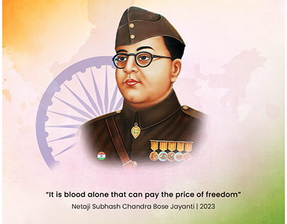

Who He Was
Subhash Chandra Bose was a prominent Indian nationalists leader who fought for India's independence from British rule. Born on January 23, 1897, in Cuttack, Odisha, he was deeply inspired by Mahatma Gandhi's principles of non-violence but eventually formed the Indian National Army (INA) to fight against the British. 
How Bose Founded an Army to Fight the British
Subhash Chandra Bose was an Indian nationalists who defied British rule in India and south foreign allies to liberate his Country.
His Contributions
Subhash Chandra Bose's leadership of the INA during World War II and his famous slogan "Give me blood, and I shall give you freedom" galvanized the Indian masses towards the cause of independence. He is remembered for his unwavering patriotism, courage, and dedication to the freedom struggle.
Some of his Famous Slogans
"Give me Blood, I'll Give you Freedom".
"Freedom is not Given, It is Taken".
"We must fight if we Want to Live".
"It is not necessary to wait for the permission of others to secure our rights."
"No real change in history has ever been achieved by Discussions.
Why He Inspires Us
Bose's determination, sacrifice, and willingness to challenge the status quo inspire generations. His belief in achieving freedom through action and his commitment to the welfare of ordinary Indians make him a revered figure in India's history.